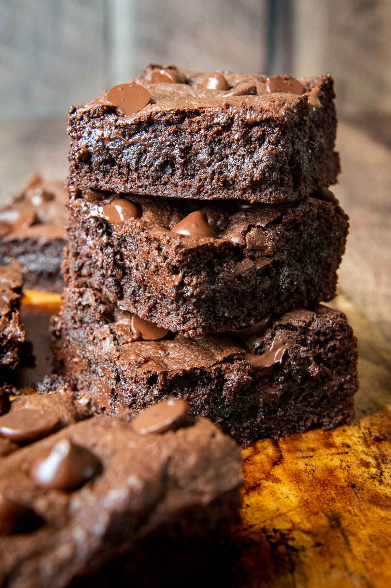

Oat Chocolate Brownies

How to make healthy and delicious oatmeal brownies
Craving that sweet chocolate goodness that is a brownie but can't bring yourself up to eat that much sugar? well fear not for this recipe is not only milds healthier, it's also a very quick one-pan bake! Let's get started shall we.
You will need:
- 250g of Oatmeal
- 2 Bananas chopped into 4 pieces total
- 1 tsp of baking soda
- 4 table spoons of Cadbury Baking Chocolate
- 2 table spoons of Honey/Sweetner of choice
- 250ml of Oatmilk
- 20g of Hershey's Chocolate Chips/or any chopped chocolate you prefer
you will need a blender of some sort, a smoothie or regular blender work just well. If you do have a smaller blender make sure you chop the bananas into smaller pieces!
Steps to bake/airfry:
- Place your 250g of oatmeal into your blender
- Followed by the chopped bananas
- add in your baking soda, chocolate powder and, honey
- Next pour in the milk, make sure to not overflow the ingredients, we dont want our batter to be too runny
- blend all ingredients until you get a thick consistency
- transfer contents into a bowl and sprinle your chocolate chips on top
- pop into the oven at 200 Degrees (celcius) and bake for 15min
you can also use an airfryer with similar heat and time
Enjoy your quick and healthy brownies!